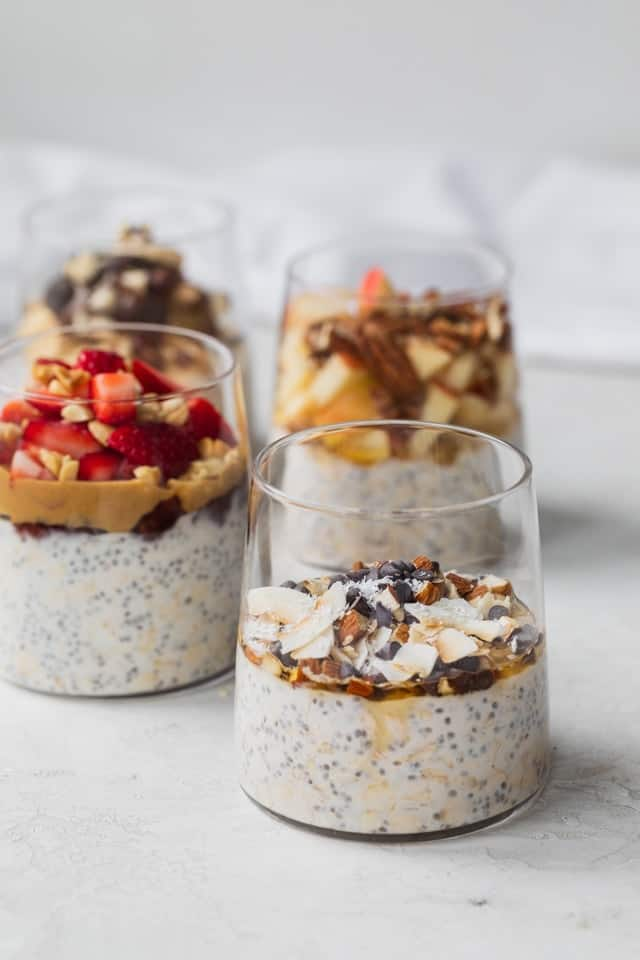

Overnight Oats

Description
Overnight Oats are a staple breakfast. This delicious, and fully nutritious meal will take you less than ten minutes to create. Overnight oats are a great source of carbs and proteins: exactly what your body needs for a boost of energy in the morning.
Once you are done preparing them, simply put them in the fridge overnight. The chia seeds will slowly soak in the milk, turning the oats into a pudding like texture.
Ingredients
- A mason jar
- Milk of your choosing
- oatmeal
- Chia Seeds
- Low fat greek yogurt
- Banana
- Honey
- Crispy Apple
Steps
- Pour a cup of oatmeal into the mason jar
- Add 1.5 cups of milk
- Add 2 heaping spoons of greek yogurt
- Add 2 spoons of Chia Seeds
- Shake well, and leave in the fridge overnight
- In the morning, take a banana and crush into a paste like consistency
- Add honesy to the banana, and add the mixture to the overnight oats. Stir.
- Cut your apple into fine pieces. This will give a nice crunch in a sea of softness